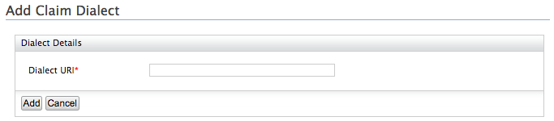
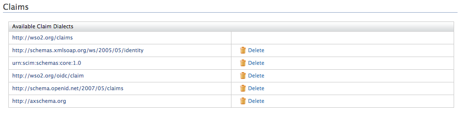
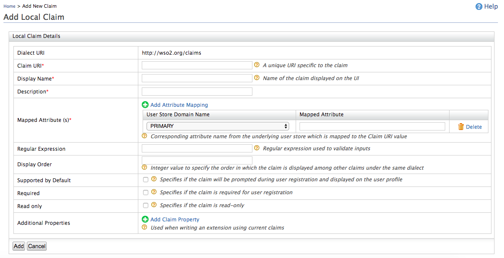
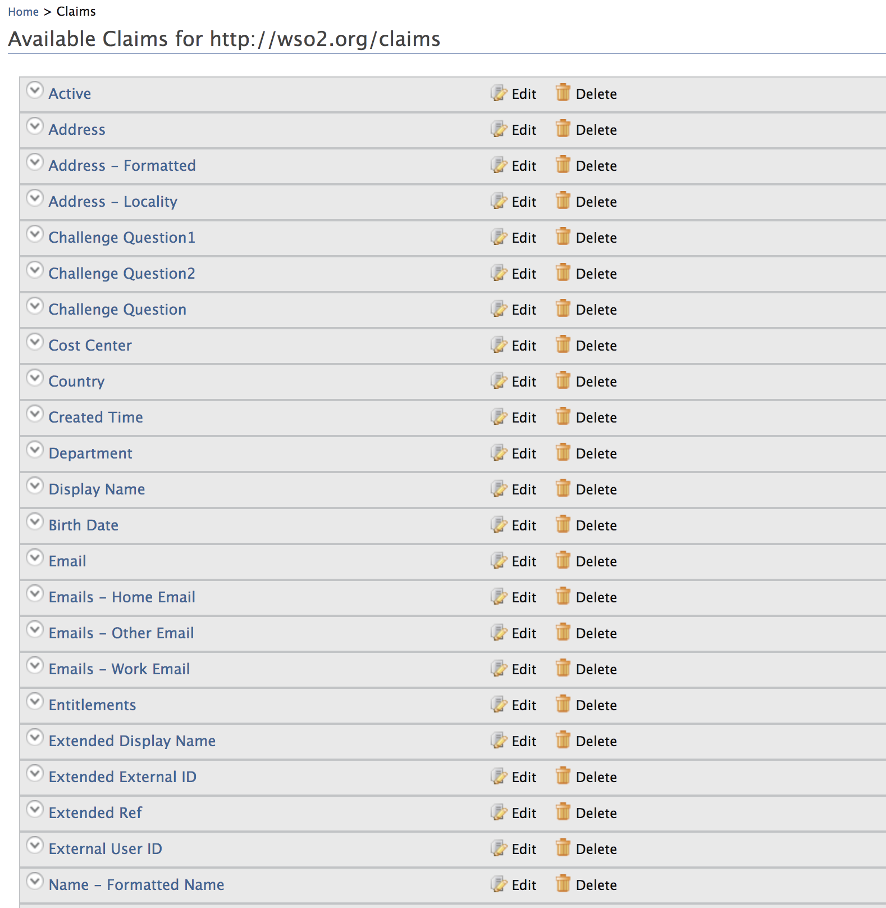
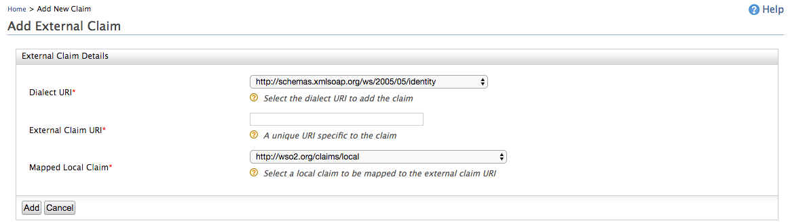

A set of claims are identified as a dialect. Different dialects represent the same piece of information with different claim URIs.
Follow the instructions below to add a new dialect using the management console.
1. Access the Management Console (https://HOST:PORT/carbon).
2. Go to Main > Identity > Claims and click Add..
3. Click Add Claim Dialect and enter a value for the Dialect URI.
The Dialect URI is a unique URI identifying the dialect (for example, http://schema.openid.net/2007/05/claims).

4. Click Add and the claim dialect will appear on the list as follows.

You can add new claim mappings to an existing claim dialects. You can add either a new local claim or an external claim:
Use the options given below to add claim mappings from the management console.
1. Access the Management Console (https://HOST:PORT/carbon).
2. Go to Main > Identity > Claims and click Add..
3. Click Add Local Claimto add a new claim to the https://wso2.org/claims (local) claim dialect.
4. Enter the required information from the list given below.

| Claim details | Description |
|---|---|
| Claim URI | This is the URI defined under the dialect specific to the claim. There are different URIs available in WSO2 Identity Server and these are equal to user attributes displayed in the profile of users. These URIs are mapped to the attributes in the underlying user store. |
| Display Name | This is the name of the claim displayed on the UI. This can be viewed in the user's profile. You can navigate to the Main tab in the management console and click List in Users and Roles. In the resulting page, click Users and in the list of users that are displayed, click User Profile next to the one you wish to check. |
| Description | This gives you the option to describe the functionality of the claim. |
| Mapped Attribute | This is the corresponding attribute name from the underlying user store that is mapped to the Claim URI value. When you have multiple user stores connected to WSO2 Identity Server, this maps the equivalent attribute in all of them to the Claim URI you are configuring. For example, if you specify the cn attribute, this is mapped to the cn attribute in all the connected user stores. If you want to specify the attribute in a specific user store, you must add the domain name in addition to the mapped claim. For example, in a scenario where you have a primary user store configured called PRIMARY and secondary user stores called AD (representing Active Directory), you can map an attribute from each of these user stores to the Claim URI value by clicking Add Attribute Mapping, selecting the respective user store from the drop-down list, and mentioning the attribute of the user store to which the attribute needs to be mapped. Example:
|
| Regular Expression | This is the regular expression used to validate inputs. Example : For a claim URI like http://wso2.org/claims/email, the regex should be something like " ^([a-zA-Z0-9_-.]+)@([a-zA-Z0-9_-.]+).([a-zA-Z]{2,5})$ " . This will validate the claim value and will not let other values except an email. |
| Display Order | This enables you to specify the order in which the claim is displayed among the other claims defined under the same dialect. |
| Supported by Default | If cleared, this claim will not be prompted during user registration. |
| Required | This specifies whether the claim is required for user registration. |
| Read-only | This specifies whether the claim is read-only or not. If the claim is read-only, it can't be updated by the user. |
| Additional Properties | These properties are not currently used in WSO2 Identity server. These property values are used to write extensions using current claims. |
5. Click Add and view the new claim mapping on the list.
Follow the steps given below to add a new claim to any claim dialect other than the local (https://wso2.org/claims) dialect. To do this, map the relevant local claim from the local claim dialect (https://wso2.org/claims).
Access the Management Console (https://
2. Go to Main > Identity > Claims and click Add.
3. Click Add External Claim to add a new claim to any existing dialect other than the local dialect.
3. Select the Dialect URI of the dialect you want to add the claim to and enter the required information.

| Parameter | Description |
|---|---|
| External Claim URI |
This is the URI defined under the
dialect specific to the claim. There are different URIs
available in WSO2 Identity Server and these are equal to user
attributes displayed in the profile of users. These URIs are
mapped to local claims in the https://wso2.org/claims dialect, which are in turn mapped to the relevant attributes in the
underlying user store.
|
| Mapped Local Claim |
This is the claim that is defined in the
local claim dialect (https://wso2.org/claims) that is mapped to the relevant attribute in the underlying user store.
|
5. Click Add to save the mapping.